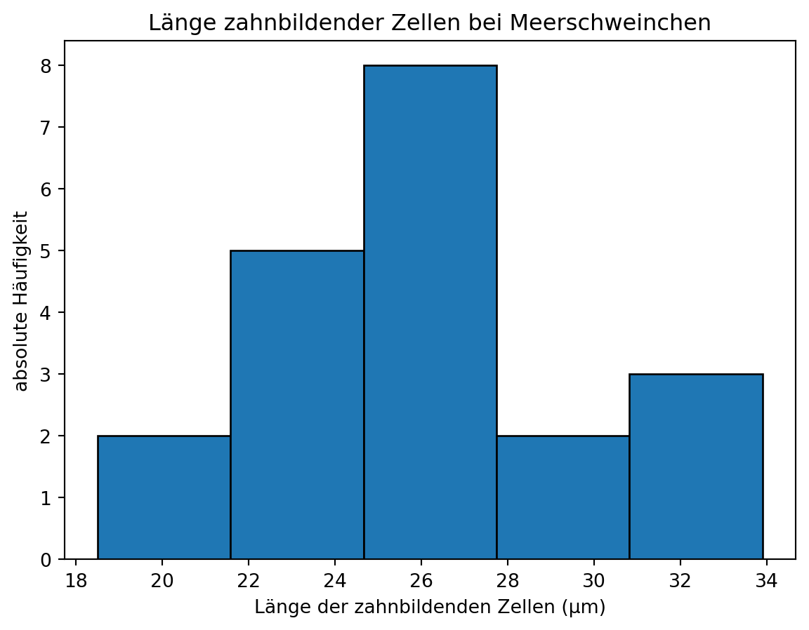
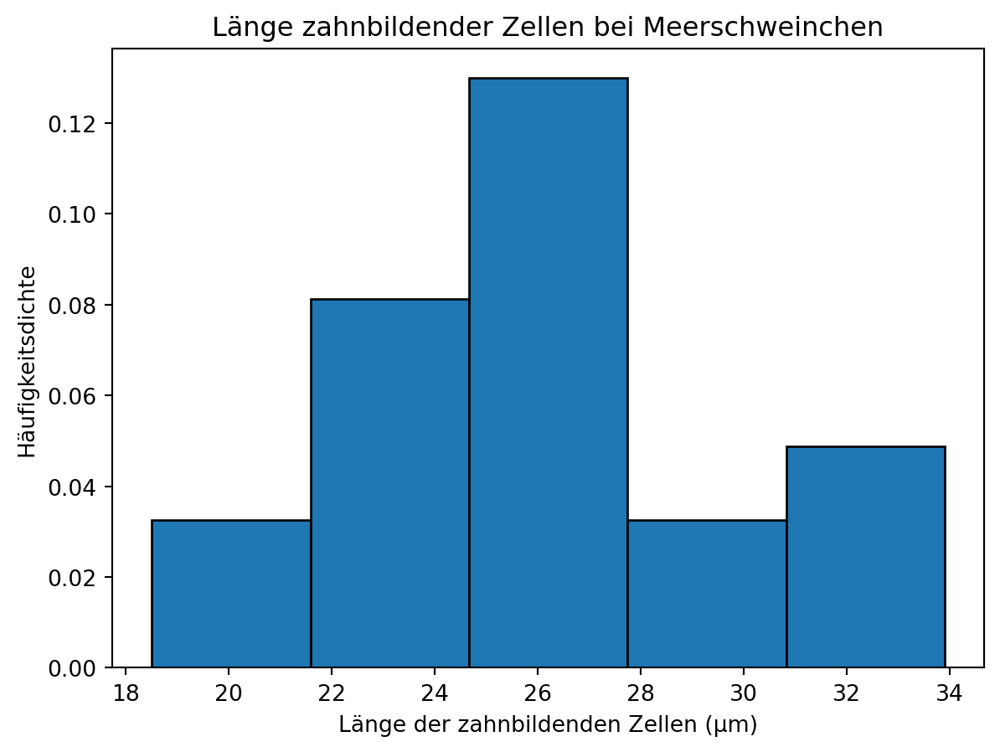
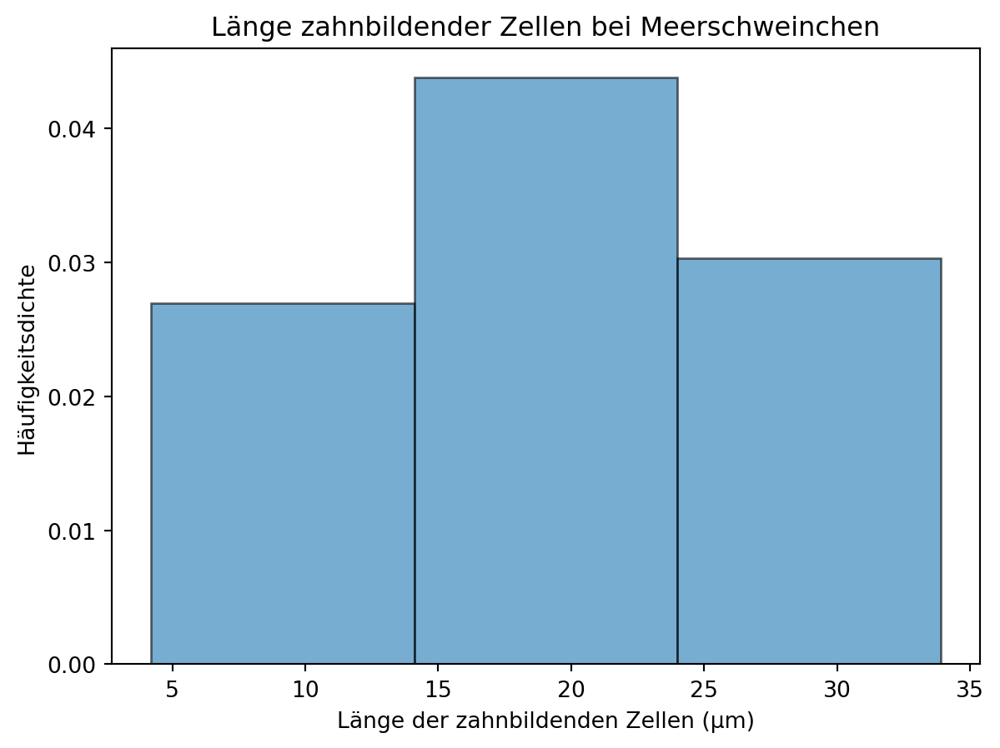
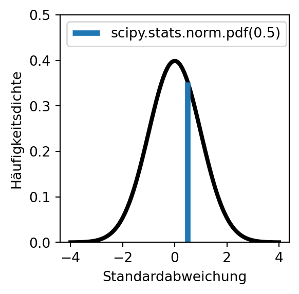
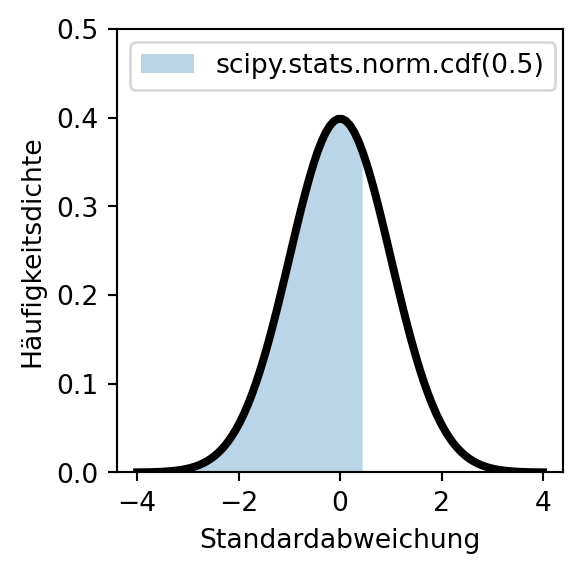
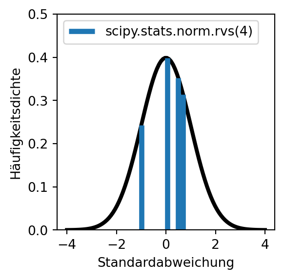
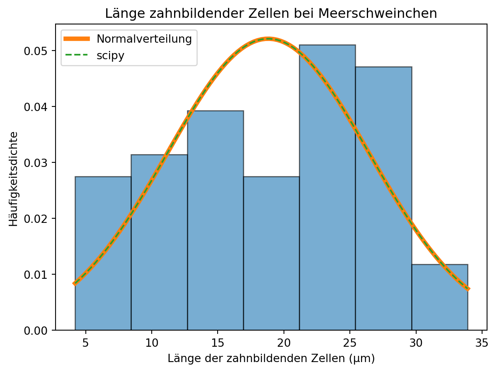

Mit zunehmender Stichprobengröße wird eine immer bessere Schätzung des Erwartungswerts erreicht. Mathematisch liegt dieser Beobachtung der zentrale Grenzwertsatz zugrunde. So werden beim Würfeln mit mehreren Würfeln weit vom Erwartungswert entfernte Wurfergebnisse immer unwahrscheinlicher. Dies lässt sich bereits mit wenigen Würfeln zeigen (siehe Beispiel).
Note 1: Häufigkeitsverteilung von Würfelergebnissen
Für einen Würfel gibt es 6 mögliche Ergebnisse, für 2 Würfel 6 * 6 mögliche Kombinationen, für 3 Würfel 6 * 6 * 6 Kombinationen und so weiter. Weil viele Kombinationen wertgleich sind, kommen Wurfergebnisse in der Nähe des Erwartungswerts häufiger vor als beispielsweise ein Einserpasch.
Die mit steigender Stichprobengröße zu beobachtende Annäherung von Messwerten an einen in der Grundgesamtheit geltenden Erwartungswert gilt auch, wenn der Erwartungswert und die Varianz in der Grundgesamtheit unbekannt sind. Mit zunehmender Stichprobengröße nähern sich die Messwerte der Normalverteilung an, die nach ihrem Entdecker Carl Friedrich Gauß auch als Gaußsche Glockenkurve bekannt ist.
Die für größere Stichproben zu beobachtende Annäherung der Verteilung von Messwerten an die Normalverteilung kann anhand des Gewichts von Pinguinen aus dem Datensatz palmerpenguins gezeigt werden.
palmerpenguins
Pinguine des Palmer-Station-Datensatzes
Meet the Palmer penguins von @allison_horst steht unter der Lizenz CC0-1.0 und ist auf GitHub abrufbar. 2020
Der Datensatz steht unter der Lizenz CCO und ist in R sowie auf GitHub verfügbar. 2020
# R Befehle, um den Datensatz zu laden
install.packages("palmerpenguins")
library(palmerpenguins)
Horst AM, Hill AP und Gorman KB. 2020. palmerpenguins: Palmer Archipelago (Antarctica) penguin data. R package version 0.1.0. https://allisonhorst.github.io/palmerpenguins/. doi: 10.5281/zenodo.3960218.
Die Normalverteilung ist eine Dichtekurve, an die sich der Verlauf eines Histogramms mit einer gegen unendlich gehenden Anzahl von Messwerten und einer gegen Null gehenden Klassenbreite annähert.
Important 1: Histogramm
Das Histogramm ist eine grafische Darstellung der Häufigkeitsverteilung kardinal skalierter Merkmale. Die Daten werden in Klassen, die eine konstante oder variable Breite haben können, eingeteilt. Es werden direkt nebeneinanderliegende Rechtecke von der Breite der jeweiligen Klasse gezeichnet, deren Flächeninhalte die (relativen oder absoluten) Klassenhäufigkeiten darstellen. Die Höhe jedes Rechtecks stellt dann die (relative oder absolute) Häufigkeitsdichte dar, also die (relative oder absolute) Häufigkeit dividiert durch die Breite der entsprechenden Klasse.
Note 2: Histogramm berechnen und visualisieren
Als Beispiel wird die Länge der zahnbildenden Zellen der Meerschweinchen verwendet, die eine Vitamin-C-Dosis von 2 erhielten.
Die Funktion np.histogram() gibt an erster Stelle ein array mit den absoluten Häufigkeiten bzw. der Häufigkeitsdichte jeder Klasse zurück. An zweiter Stelle wird ein array mit den x-Positionen der Klassenrechtecke zurückgegeben - dabei wird für jede Klasse die Position der linken Seite sowie für die letzte Klasse zusätzlich die Position der rechten Seite des Rechtecks ausgegeben. Für 5 Klassen werden also 6 Positionswerte ausgegeben.
Die Klassenbreite kann zum Beispiel mit der Methode np.diff() ausgegeben werden.
Ein Histogramm kann mit der Funktion plt.hist(x, bins = None, *, range = None, density = False) aufgerufen werden, welche intern np.histogram() für die Berechnungen aufruft. Die Parameter der Funktion entsprechenen denen der NumPy-Funktion, wobei mit dem Argument x die darzustellenden Daten übergeben werden. Zusätzlich können verschiedene Grafikparameter übergeben werden.
Die Funktion hat 3 Rückgabewerte: die absolute Häufigkeit der Klassen (bzw. wenn density = True die Häufigkeitsdichte), die x-Position der Rechtecke.
plt.hist(dose2, bins =5, edgecolor ='black')plt.title('Länge zahnbildender Zellen bei Meerschweinchen')# Achsenbeschriftungplt.xlabel('Länge der zahnbildenden Zellen (μm)')plt.ylabel('absolute Häufigkeit')plt.show()

Eine Darstellung der relativen Häufigkeiten ist nicht direkt möglich.
hist_dichte, bins, ignore = plt.hist(dose2, bins =5, density =True, edgecolor ='black')plt.title('Länge zahnbildender Zellen bei Meerschweinchen')# relative Häufigkeit berechnenklassenbreite = np.diff(bins)[0]hist_relativ = hist_dichte * klassenbreite# yticks erzeugen an der Position von min(hist_dichte) bis max(hist_dichte)# aber mit Werten von hist_relativplt.yticks(ticks = np.linspace(min(hist_dichte), max(hist_dichte), len(hist_relativ)),labels = np.linspace(hist_relativ.round(2).min(), hist_relativ.round(2).max(), len(hist_relativ)).round(3));# Achsenbeschriftungplt.xlabel('Länge der zahnbildenden Zellen (μm)')plt.ylabel('relative Häufigkeit')plt.show()
plt.hist(dose2, bins =5, density =True, edgecolor ='black')plt.title('Länge zahnbildender Zellen bei Meerschweinchen')# Achsenbeschriftungplt.xlabel('Länge der zahnbildenden Zellen (μm)')plt.ylabel('Häufigkeitsdichte')plt.show()

Histogramme sind nicht immer gut geeignet, um die Verteilung einer Stichprobe zu charakterisieren. Der visuelle Eindruck hängt von der gewählten Klassenzahl ab - ein Beispiel:
plt.hist(meerschweinchen['len'], bins =3, density =True, edgecolor ='black', alpha =0.6);plt.title('Länge zahnbildender Zellen bei Meerschweinchen')# Achsenbeschriftungplt.xlabel('Länge der zahnbildenden Zellen (μm)')plt.ylabel('Häufigkeitsdichte')plt.show()

plt.hist(meerschweinchen['len'], bins =5, density =True, edgecolor ='black', alpha =0.6);plt.title('Länge zahnbildender Zellen bei Meerschweinchen')# Achsenbeschriftungplt.xlabel('Länge der zahnbildenden Zellen (μm)')plt.ylabel('Häufigkeitsdichte')plt.show()
plt.hist(meerschweinchen['len'], bins =7, density =True, edgecolor ='black', alpha =0.6);plt.title('Länge zahnbildender Zellen bei Meerschweinchen')# Achsenbeschriftungplt.xlabel('Länge der zahnbildenden Zellen (μm)')plt.ylabel('Häufigkeitsdichte')plt.show()
Mit einer Dichtekurve wird optisch der Übergang zu einem Histogramm mit einer gegen unendlich gehenden Anzahl von Klassen vollzogen. Dadurch gehen zwar Details verloren, aber es wird eine klare Darstellung erreicht.
Die Dichtefunktion der Normalverteilung beschreibt, welcher Anteil der Werte innerhalb eines bestimmten Wertebereichs liegt. Bei der Berechnung der relativen Häufigkeiten in Note 2 haben wir gesehen, dass die Summe der relativen Häufigkeiten 1 ist. Dies entspricht der Fläche unterhalb der Dichtekurve.
Die Dichtefunktion der Normalverteilung ist definiert als:
Der Erwartungswert ist der höchste Punkt der Kurve. Die Wendepunkte der Kurve liegen jeweils eine Standardabweichung vom Mittelwert entfernt.
Eine Normalverteilung mit dem Mittelwert \(\mu = 0\) und einer Standardabweichung \(\sigma = 1\) heißt Standardnormalverteilung.
Normalverteilung anpassen
Um die Verteilung in einem Datensatz durch eine Normalverteilung anzunähern, werden dessen Mittelwert und Standardabweichung in die Funktionsgleichung der Normalverteilung eingesetzt. Mit Python können die Berechnungen direkt vorgenommen werden (siehe folgendes Beispiel). In der Handhabung einfacher sind die vom Paket SciPy bereitgestellten Funktionen, die im nächsten Abschnitt vorgestellt werden.
Note 3: Dichtekurven berechnen und darstellen
Betrachten wir die Verteilungskennwerte der Gruppe der Meerschweinchen, die eine Dosis von 2 Milligramm Vitamin C erhielten.
Die Verteilung der Länge zahnbildender Zellen bei Meerschweinchen, die eine Dosis von 2 Milligramm Vitamin C erhielten, könnte einer Normalverteilung entsprechen. Aufgrund der geringen Stichprobengröße ist dies aber schwer zu beurteilen.
Quelle: Skript MB S. 51-54
Das Paket SciPy
Funktionen zur Berechnung von Dichtekurven können über das Modul stats aus dem Paket SciPy importiert werden. Das Modul umfasst zahlreiche Verteilungen, bspw. auch die t-Verteilung. Funktionen für die Normalverteilung werden wie folgt aufgerufen:
import scipyprint("Häufigkeitsdichte der Normalverteilung bei x = 0:", scipy.stats.norm.pdf(0), "\n")# t Verteilungenprint("Häufigkeitsdichte der t-verteilung bei x = 0:", scipy.stats.t.pdf(0, df =1))
Häufigkeitsdichte der Normalverteilung bei x = 0: 0.3989422804014327
Häufigkeitsdichte der t-verteilung bei x = 0: 0.31830988618379075
Für die Normalverteilung sind vier Funktionen relevant:

Beschreibung
Die Funktion scipy.stats.norm.pdf(x) berechnet die Dichte der Normalverteilung am Punkt x (PDF = probability density function). x kann auch ein array sein - so wurde die linksstehende Kurve mit dem Befehl scipy.stats.norm.pdf(np.linspace(-4, 4, 100)) berechnet.

Beschreibung
Die Funktion scipy.stats.norm.cdf(x) berechnet den Anteil der Werte links von x (CDF = cumulative density function).
Beschreibung
Die Funktion scipy.stats.norm.ppf(q) ist die Quantilfunktion der Normalverteilung und die Umkehrfunktion der kumulativen Häufigkeitsdichtefunktion (CDF). Die Funktion berechnet für \(0 \le q \le 1\) den Wert x, links von dem der Anteil q aller Werte liegt und rechts von dem der Anteil 1-q liegt (PPF = percentile point function).

Beschreibung
Die Funktion scipy.stats.norm.rvs(size) zieht size Zufallszahlen aus der Normalverteilung.
Mit den Parametern loc = mittelwert und scale = standardabweichung kann die Form der Normalverteilung angepasst werden.
Aufgabe Normalverteilung
hier ein paar Aufgaben, welche Anteile… usw. wenn scale = 15 und und mean = 100 ist (IQ-Verteilung)
Aufgabe: Histogramm von (meerschweinchen[‘len’] mit 7 bins und mit Normalverteilungskurve zeichnen

Im nächsten Schritt wollen wir auf den tatsächlichen Mittelwert der Pinguine schließen Dafür muss die t-Verteilung eingeführt werden
Die Überlegung, dass von Stichprobenwerten auf den tatsächlichen Wert in der Grundgesamtheit geschlossen werden kann, ist (beispielsweise für den Mittelwert) wie folgt:
Wenn eine Stichprobe aus einer Grundgesamtheit gezogen wird, dann streuen die Stichprobenwerte normalverteilt um den Mittelwert der Grundgesamtheit. Bei einer Normalverteilung liegen
68,27 % aller Werte im Intervall \(\pm 1 ~ s\),
95,45 % aller Werte im Intervall \(\pm 2 ~ s\) und
99,73 % aller Werte im Intervall \(\pm 3 ~ s\).
Mit der gleichen Wahrscheinlichkeitsverteilung liegt der unbekannte Mittelwert der Grundgesamtheit um einen zufälligen Wert aus der Stichprobe.
Der Erwartungswert kann mit einer gewissen Wahrscheinlichkeit aus dem Standardfehler des Mittelwerts einer Stichprobe geschätzt werden. Um das Konfidenzintervall zu bestimmen, muss eine Vertrauenswahrscheinlichkeit gewählt werden.
der Erwartungswert liegt in 68,27 % aller Fälle im Intervall \(\pm 1 ~ \frac{s}{\sqrt{n}}\),
der Erwartungswert liegt in 95,45 % aller Fälle im Intervall \(\pm 2 ~ \frac{s}{\sqrt{n}}\) und
der Erwartungswert liegt in 99,73 % aller Fälle im Intervall \(\pm 3 ~ \frac{s}{\sqrt{n}}\).
Häufig wird das Konfidenzintervall 95 % gewählt, was \(\pm 1.96 ~ \frac{s}{\sqrt{n}}\) entspricht . (Das gilt aber nur für große Stichproben. Für kleine n folgen die Stichprobenmittelwerte einer t-Verteilung. Man sagt, dass sich die Werte der t-Verteilung ab n > 30 der Normalverteilung annähern. Hier müsste man eigentlich die t-Verteilung vorstellen.)
Die t-Verteilung müsste eingeführt werden.t-Verteilung
statt: scipy.stats.norm.cdf(1) nimmt man: scipy.stats.t.cdf(1, df = 4), wobei df Stichprobengröße -1 ist.
Für eine Stichprobengröße von 4 gilt: scipy.stats.t.cdf(1, df = 4) - scipy.stats.t.cdf(- 1, df = 4) np.float64(0.626099033699941) –> 62,6 % der Werte
Bestimme den Stichprobenmittelwert (\bar{x}).
Bestimme (s) (Stichprobenstandardabweichung) oder (\sigma).
Bestimme (n) (Stichprobengröße).
Wähle das Konfidenzniveau und bestimme den entsprechenden Z- oder t-Wert.
Berechne das Konfidenzintervall mit den obigen Formeln.
Ein höheres Konfidenzniveau ergibt ein breiteres Intervall, dass mit höherer Sicherheit den wahren Mittelwert abdeckt.
–> Normalverteilung und die Wahrscheinlichkeiten erklären - 1standardfehler, 2standardfehler, 3standardfehler = Konfidenzintervalle –> das wird zu kompliziert oder?
to do: fig-alt to do: panel Stichprobe mit Streuung in Intervallen des Standardfehlers
Optisch ist das nicht schön… das sollte an der geringen Standardabweichung von ~ 0.2 in der Stichprobe liegen. Das staucht die Kurve. To do: Kontrollieren, ob alles richtig ist.
Aufgabe könnte das plotten der Schnabellänge sein
Schnabeldimensionen
Bill dimensions von @allison_horst steht unter der Lizenz CC0-1.0 und ist auf GitHub abrufbar. 2020
Einen Überblick über den Datensatz verschafft die Methode DataFrame.info().
Gilt auch für Messungen: Wenn sehr häufig gemessen wird
Das plotten ist aber aufwändig, weil man alles manuell erstellen muss. –> optional / für später
Wenn eine Stichprobe aus einer Grundgesamtheit gezogen wird, dann streut der Stichprobenmittelwert um den Mittelwert der Grundgesamtheit, also den Erwartungswert. Anhand des Würfelexperiments wurde gezeigt, dass mit zunehmender Stichprobengröße Stichprobenmittelwerte in der Nähe des Erwartungswerts immer wahrscheinlicher werden als solche, die weiter entfernt liegen.
Verzerrung (Bias): https://de.wikipedia.org/wiki/Verzerrung_einer_Sch%C3%A4tzfunktion quantifiziert das systematische Über- oder Unterschätzen der Schätzfunktion